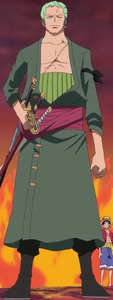

Strawhat Pirates
Monkey D. Luffy
Straw Hat Luffy

Monkey D. Luffy, also known as "Straw Hat Luffy"
and commonly as "Straw Hat", is the main
protagonist of the manga and anime, One Piece.
He is the founder and captain of the increasingly
infamous and powerful Straw Hat Pirates, as well as
one of its top fighters. His lifelong dream is to
become the Pirate King by finding the legendary
treasure left behind by the late Gol D. Roger. He
believes that being the Pirate King means having
the most freedom in the world
Born in Foosha Village, Luffy accidentally ate
the Gomu Gomu no Mi at age 7, which turned his
body into rubber. He met "Red-Haired" Shanks,
who gave Luffy the very Straw Hat that has become
Luffy's signature accessory, having gifted it to
the boy as part of a promise for them to meet
again someday. Luffy is the son of the Revolutionary
leader Monkey D. Dragon, the grandson of the Marine
hero Monkey D. Garp, the sworn brother of the
late "Fire Fist" Portgas D. Ace and Revolutionary
Chief-of-Staff Sabo, and the foster son of Curly
Dadan. He is one of the few people in the world
who carries the Will of D.
Roronoa Zoro
Pirate Hunter Zoro

Roronoa Zoro, also known as "Pirate Hunter"
Zoro,
is the combatant of the Straw Hat Pirates, and one
of their two swordsmen. Formerly a bounty hunter,
he is the second member of Luffy's crew and the
first to join it, doing so in the Romance Dawn Arc.
As a master of Three Sword Style, a swordsmanship
style which he created during his childhood training
in Shimotsuki Village, Zoro is among the three most
powerful combatants of the Straw Hats, alongside
Luffy and Sanji. His dream is to become the greatest
swordsman in the world, in order to honor a promise
he made to his deceased childhood friend Kuina.
In addition to his infamy as one of the Straw Hats
and as a former bounty hunter, Zoro is also regarded
as one of twelve pirates who are referred to as the
"Worst Generation".
He currently has a bounty of 320,000,000.
Vinsmoke Sanji
Sanji

"Black Leg" Sanji, born as Vinsmoke Sanji, is the
cook of the Straw Hat Pirates. He is the fifth member
of the crew and the fourth to join, doing so at the
end of the Baratie Arc.
Born as the third son and fourth child of the
Vinsmoke Family (thus making him a former prince
of the Germa Kingdom), he disowned his family twice,
once in his youth and again after reuniting with
them as an adult. After fleeing the Vinsmokes as a
child, he eventually entered the care of Zeff as
the sous chef of the Baratie, where he would remain
until he met Monkey D. Luffy, who convinced him to
join his crew.
His dream is to find the rumored chef's paradise,
All Blue, which is where East Blue, West Blue, North
Blue, and South Blue meet, along with their wildlife.
He is one of the top three fighters of the Straw Hats,
alongside Luffy and Zoro.
He currently has a bounty of Beli.png330,000,000,
the third-highest in the crew after Luffy and Jinbe.
Despite renouncing his surname Vinsmoke, the World
Government labels it as part of his name on his
wanted poster.